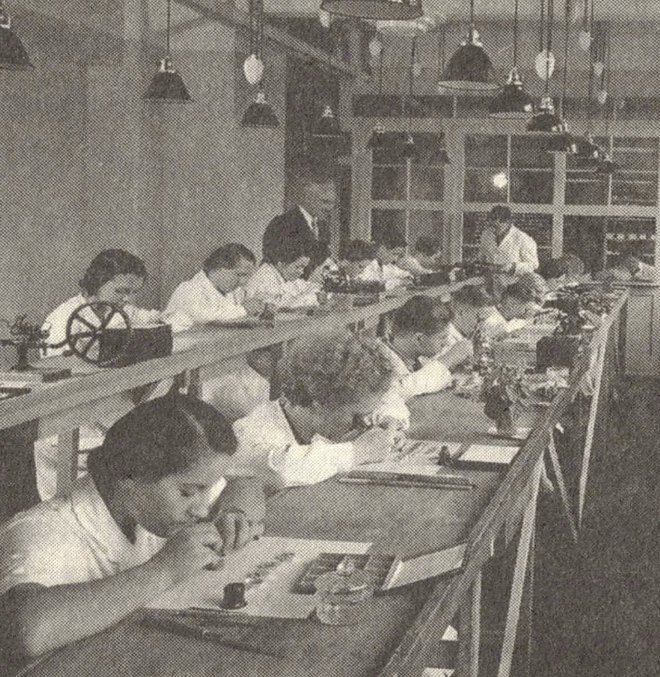

enjoys: music, history, programming, jesus, chess, making
things, family and friends,
guitars, dampfnudeln (a german food), science, internet,
learning new things, human rights, nature, and more...
Die Pforzheimer Schmuck- und Uhrenindustrie im Wandel der Zeit

Werkbank eines Goldschmiedes

Blick in die Pforzheimer Uhrmacherwerkstatt der Firma Fritz Harms
Pforzheim ist auch als die 'Goldstadt' bekannt. Aber warum? Der Name
beschehrte ihr die sehr vertretene Schmuck- und Uhrenindustrie, die
ihre Anfänge 1767 hatte. Pforzheimer Schmuck und Uhren waren
Weltbekannt. Waren aus der 'Goldstadt' wurden in fast alle
Kontinente exportiert.
Doch wie kam es dazu? Vor allem die erste Hälfte des 20. Jahrunderts prägte nicht nur Pforzheim sondern auch ihre Schmuck- und Uhrenindsutrie. Welche Einflüsse hatten prägende Ereignise der ersten Hälfte des 20. Jahrunderts, wie die völlige Zerstörung Pforzheims, zwei Weltkriege, ein NS-Regime, die Goldenen Zwanziger und schließlich der Wiederaufbau auf die Schmuck- und Uhrenindustrie in Pforhzeim?
Wie sich die Industrie im Wandel der Zeit verändert habe ich versucht in meinem Magazin näher zu beleuchten.
Doch wie kam es dazu? Vor allem die erste Hälfte des 20. Jahrunderts prägte nicht nur Pforzheim sondern auch ihre Schmuck- und Uhrenindsutrie. Welche Einflüsse hatten prägende Ereignise der ersten Hälfte des 20. Jahrunderts, wie die völlige Zerstörung Pforzheims, zwei Weltkriege, ein NS-Regime, die Goldenen Zwanziger und schließlich der Wiederaufbau auf die Schmuck- und Uhrenindustrie in Pforhzeim?
Wie sich die Industrie im Wandel der Zeit verändert habe ich versucht in meinem Magazin näher zu beleuchten.

Inspektion der Herstellung von Waffen in der Feinindustrie; Stadtarchiv Pforzheim
über das Magazin und diese Website
Diese Seite dient dazu, meine Arbeit und die Forschungsergebnisse zu
veröffentlichen und interessierten zur Verfügung zu stellen.
Das Magazin habe ich ursprünglich für den
Georg-Simler Preis
erstellt - ein Geschichtswettbewerb in Pforzheim. Anlässlich der
Finissage zum 20-jährigen Jubiläum der Schmuckwelten Pforzheim am 25.
November 2025 hatte ich die Gelegenheit, mein Magazin im Rahmen eines
Interviews vorzustellen. Außerdem wurde es zu diesem Anlass in
gedruckter Form der vervielfältigt.
Als Editor für das Magazin habe ich
Affinity Publisher
benutzt.
Diese Website habe ich selbst mit HTML, CSS, etwas JavaScript und
Python erstellt. Sie läuft über Flask. Den Quellcode kann man
jederzeit auf
Github
einsehen.
Bei Fragen, Kritik, Verbesserungsvorschlägen oder sonstigen Wünschen
kann man mich unter folgender E-Mail-Adresse erreichen:
info@emilgerlach.com
Danke fürs Lesen - letzte änderungen 25.2.2026